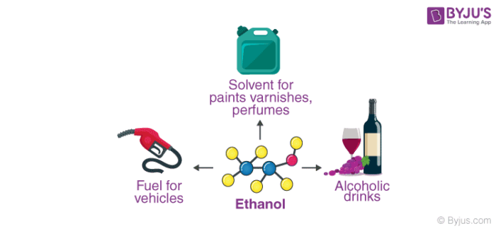

Ethanol In the Worlds Industries
- The primary industrial uses of this alcohol are as an intermediate in the production of other chemicals and as a solvent. Ethanol is used in the manufacture of drugs, plastics, lacquers, polishes, plasticizers, and cosmetics.
- The most common use of ethanol as a fuel is as fuel ethanol in mixtures of finished motor gasoline. Most of the gasoline sold in the United States contains some ethanol.
- Ethanol is used as a natural product to extract and concentrate flavours and aromas, which are then used by the food & drink industry. No alcohol is contained in the final products.
